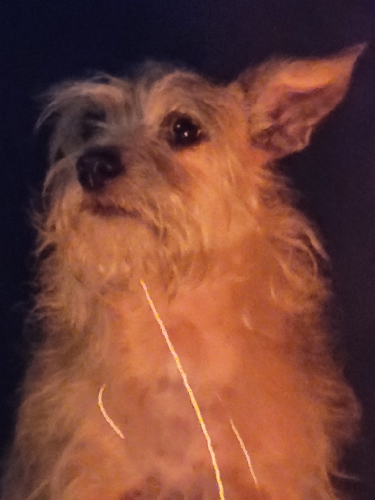

Welcome to my portfolio website. This will essentially showcase what I am capable of within front-end web development.
Please enjoy these pictures of my pets 🐶🐕🐈⬛🐱.
Pets

Louie was adopted from an animal hospital down in Orange Beach Alabama. He was about 6 months when we adopted him. We soon realized that he would need a lot of love. He goes crazy for wet food and never fails to let you know when he is hungry. He can get quite loud and has tuna breath. If him clawing on your face to wake you up doesnt actually wake you up, his breath will.
Osmond was also adpoted in OB Alabama at about 6 months as well. He is very energetic and loves to cuddle.